中文
中文I. Curie and F. Joliot
Editor’s Note
James Chadwick had estimated the neutron mass by analysing a reaction in which an alpha particle stimulates the transformation of boron into nitrogen with emission of a neutron. His calculations required the experimental values for the masses of several nuclei. Here wife-and-husband physicists Irène Curie and Frédéric Joliot report a more accurate and higher value for the neutron mass by examining other reactions, and without using any nuclear mass other than that of the proton. This higher value suggested that one might interpret nuclear beta decays as being triggered by the decay of a neutron into a proton within the nucleus, with the ejection of an electron and a neutrino, which today remains the modern view. 中文
THE mass of the neutron has been calculated by Chadwick on the assumption that the neutrons of boron are emitted by the isotope
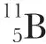
, according to the nuclear reaction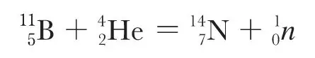
Using the exact masses of
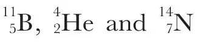
and the maximum energy of the neutron excited by the α-rays of polonium, one may calculate for the neutron a mass 1.0068 (taking 16O = 16).1 中文
We have suggested2 that the emission of the neutron of boron is due to the isotope
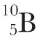
and not to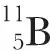
. The nucleus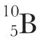
can suffer two kinds of transmutation under the action of the α-particles of polonium, one with the emission of a proton, one with the emission of a neutron and a positive electron, according to the equations: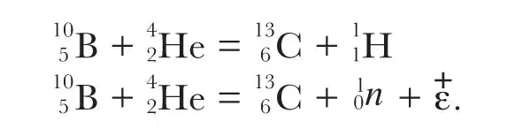
Our latest experiments on the creation of new radio-elements have confirmed our interpretation of the transmutation of boron. Similar reactions are observed with the nucleus
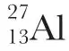
and with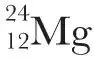
. The reactions can be divided in two steps: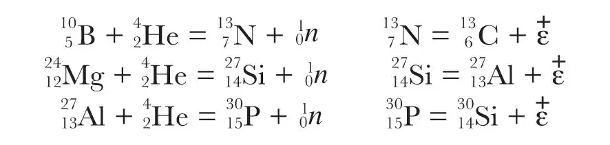
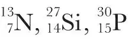
being unstable nuclei that disintegrate with the emission of positrons. 中文
The complete reactions, with the masses and energy of all the particles are, for the two modes of transmutation of boron:
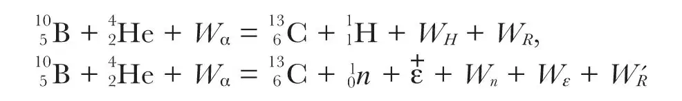
where Wα, WH, Wn, Wε, WR, W'R are the energies of the α-particle and the corresponding energies of the ejected particles and of the recoil atoms in the reactions. Subtracting the first of these equations from the second gives:
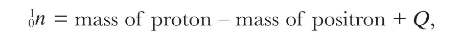
where
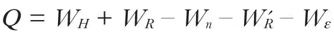
. 中文
One gets exactly the same equation using the transmutations of aluminium and magnesium. 中文
Thus these equations enable us to calculate the mass of neutron without using the exact masses of any nucleus, except the proton. 中文
According to our most recent measurements, the positrons emitted by the new radio-elements form a continuous spectrum of maximum energy 1.5×106 e.v. for
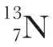
, 3×106 e.v. for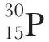
and approximately 1.5×106 e.v. for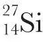
. The emission of positrons is probably accompanied by the emission of neutrinos, but if the positrons have their maximum energy, the neutrinos will have a very small energy; the most recent hypotheses on the nature of this particle admits of a mass which is zero, or very small. So we need not take this particle into account in the calculations. The energy of the recoil atom in the disintegration with emission of a positron is negligible. 中文
For the irradiation with the α-rays of polonium we have the following numerical values for the energies (expressed in 106 e.v.). One gets for the mass of neutron three values: 1.0098, 1.0092, 1.0089. These values agree approximately. Yet the first, deduced from boron, is the most precise. The energies of the neutrons of aluminium and magnesium and the energy of the positrons of magnesium are not well known. 中文
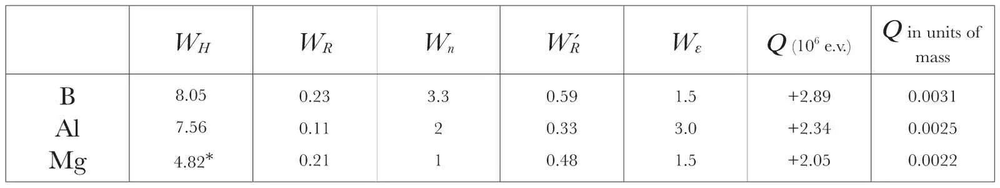
* The maximum energy possible for the positrons does not correspond to a group effectively observed, but has been deduced by F. Perrin from the experiments of Bothe and Klarman, by the consideration of the energy balance relative to the groups of protons. 中文
From considerations on the stability of the nucleus
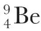
, the mass of the neutron should have a minimum value 1.0107. But an error of 0.001 in the determination of the mass of Be seems quite possible. 中文
We may adopt for the mass of the neutron a value 1.010, in which the error probably does not exceed 0.0005. 中文
With the mass 1.010 for the neutron, the maximum energy of the neutron ejected from beryllium by α-particles from polonium should be about 9×106 e.v. The emission of slow neutrons when lithium is bombarded with α-particles from polonium, according to the reaction
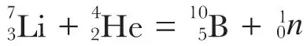
, cannot be explained unless the mass adopted for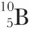
is too great, namely, by about 0.003. 中文
If atomic nuclei contain only protons and neutrons, then the β-emission might be the consequence of the transformation of a neutron into a proton inside the nucleus, with the ejection of the negative electron and a neutrino, as has been suggested by several authors. The inverse processes would also be possible: transformation of a proton into a neutron with the ejection of a positron and a neutrino. 中文
With the mass 1.010 for the neutron, the energy liberated in the transformation neutron → proton +
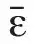
is 2.1×106 e.v.; the energy absorbed in the transformation proton → neutron +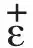
is 3.1×106 e.v. 中文
(133, 721; 1934)
I. Curie and F. Joliot: Institut du Radium, Paris, 5.
References:
1. Chadwick, Proc. Roy. Soc., 136, 692; 1932.
2. I. Curie and F. Joliot, C.R., 197, 237; 1933.